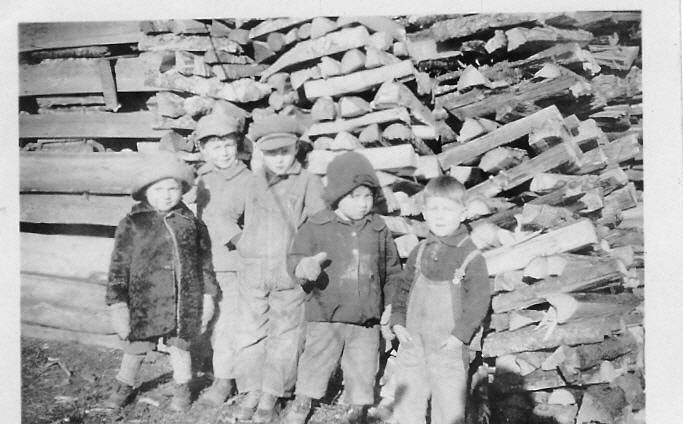

The Family Chronicle
No. 76 July 21, 2004
________________

Thanks to Marjorie (Watling) Young for the above photo, taken in front of the winter’s wood – probably at Uncle Jim’s or at home. From left to right: Norman Glendenning, Winfield Watling, Hartley Chase, Ken Glendenning, and Roy Watling.
I had to replace my hard drive and lost some genealogical information as well as information for inclusion in the newsletter. I also lost some email addresses. If you sent email recently and have not had a reply or sent info that has not appeared in the Newsletter, you will understand why. I would welcome hearing from you again.
You may recall that the grant where Norman Glendenning and Neil Watling now live, Lot #2, originally belonged to my GGGrandfather, Alexander MacDonald. The lot next to it, Lot #3, where Ian MacNaughton lived in my time, was originally granted to a Sinclair. (I write this while traveling and do not have access to my notes to provide the first name.)
Recently I learned from Dorothy (MacKay) Lind that the Sinclair property was purchased by John MacNaughton, I do not know the year, who was married to Katherine Cameron. Katherine and John had a number of children including Mary, who married John A. Mills. John and Mary
Mills had a daughter, Katherine, who married James (Uncle Jim) Watling. So, after her marriage, Aunt Kate moved to the property next to the one where her mother was born and where her Uncle Donald MacNaughton still lived. Because Aunt Kate’s mother died quite young, Aunt Kate spent considerable time at her grandfather’s home.
The item on watering the cows at the brook in winter reminded Donald Edge “of Fraser MacKay wading through deep snow to break a path for the cows to get down to the spring located in alders behind my grandfather's woodshed. Wading through snow and chopping holes in the ice, as hard work as it was, was easier than lugging pails of water from the house to the barn. The irony was that there was a pump in the barn, but we never seemed to be able to keep it from freezing.”
“Dripping cow tail” was used in a note from Donald Edge and seems appropriate when describing the process of milking cows by hand. I am sure that many of the older readers will identify with the following experiences.
As I recall, we milked from 8-12 cows, the number varied. There would be an equal and likely larger number of young cattle and dry cows. Cattle stayed in the barn all winter, except for going to the brook for water, and in the fields all summer even being put out in the field at night after milking. Summer cows were generally clean whereas winter cows were dirty and smelly – but all had to be milked.
We always milked cows in the barn although people with only a cow or two might take their pail to the field, next to the barn, and milk there.
The milking process is simple. One takes a stool, three-legged was more stable than four, sits down beside the cow, and reaches under
brushing a hand over the udder to remove any dust, grass or dirt. Then, taking a teat in each hand one gently but firmly closed the thumb and forefinger, and then the other fingers, forcing the milk down and out into the pail below. One soon developed a rhythm of both a vertical hand movement and the squeezing with the fingers.
We always held the pail between our legs although some, I believe, set the pail on the floor. Having the pail between your knees, helped to keep the pail from being upset if the cow should kick. While this did not happen very often, it did happen. Tying a rope around the cow just ahead of the udder prevented her from kicking. There was no defense, however, from the swishing tail.
While milking, it was not unusual for a cow to lazily swish her tail to scare away blackflies gathering on her flanks or back. Occasionally, the gently swishing tale would catch one on the face or side of the head – not normally a problem, especially with a clean cow in summer.
In winter, however, cows were stabled and, especially a large cow, did not or could not, always keep her tail out of the trench behind her. A tail could be loaded. Even if the cow was standing for a while, the end of the tail remained wet. A wet smack on the side of the head, although not pleasant, was not unusual. It sure brought your mind back to the business at hand if you were thinking about the good time you had at the dance the night before.
Usually at least two of us milked at the same time and it was surprising how quickly one got the rhythm and could fill a pail of milk. When I was very young, I used to take my tin mug and go to the barn while the older boys were milking. They would fill my mug directly from the cow and I would drink it warm. I couldn’t do that now.
After the cow was milked, the pails of milk, each one holding about 10 quarts, were carried to the house where the cream separator was located.
The Cream Separator
A cream separator is an ingenious device. At its heart is an cone, like a space capsule about 4 inches in diameter at the large end, filled with 8-10 or 12 thin metal discs like coffee filters. The cone-shaped part is made to spin by turning the separator handle. As the milk flowed down through, centrifugal force causes the liquid to move away from the center with the cream, being lighter, rising and the skimmed milk, being heavier, staying lower. As it emerges from the cone the cream flows out of the upper spout and the skimmed milk flows from the lower. The skim milk was fed to the pigs and the cream sold to the dairy or used at home to make butter.
Ours was a DeLaval separator with stainless steel parts where the milk was in contact. (It seems to me that Renfrew was also a popular brand.) It was my job, usually to run the separator. One poured the fresh milk into the hopper, bowl at the top, then turned the crank to bring the separator up to speed. Normally, one learned to judge the speed and to keep it constant. Later models had a small bell that stopped ringing when the correct speed was reached or started ringing if one slowed the cranking process. Once up to speed, the spigot was opened and the mild began to flow.
After each use, the separator had to be disassembled, including all the disks removed, washed in soapy water and rinsed thoroughly. Unless one kept the separator clean, the cream would become contaminated and could bring a lower price or even be rejected at the creamery. Once the cream cooled, it was transferred to a 3-5 gallon cream can and stored in the basement or, for a while, in a spring down at the brook – we did not have an icebox or refrigerator.
The Chronicle is an occasional newsletter prepared by Don Glendenning and posted on the family website. It is designed to share information about my family, community and the times in which I grew up. While every effort is made to be accurate, errors are likely to occur. Comments, enquiries and information may be sent to 62 Queen Elizabeth Drive, Charlottetown, PEI, C1A 3A9. Tel: 902-892-5859 Email: dglende@auracom.com Web: www.glendenning.net